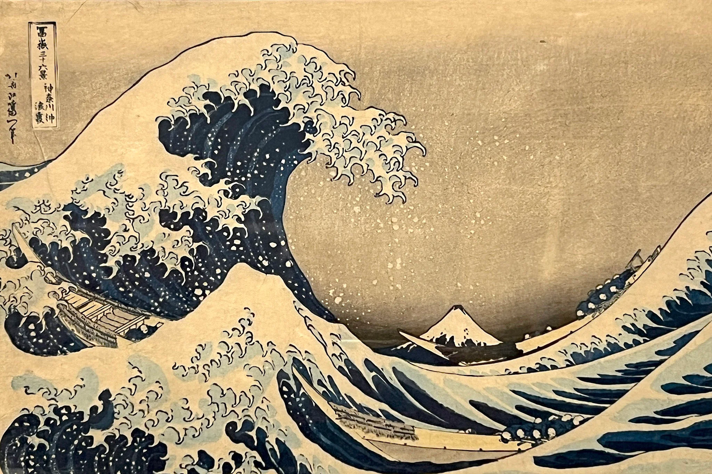

Artist: Katsushika Hokusai
Year: 1831
The Great Wave off Kanagawa is one of the most famous works of Japanese art. It depicts a giant wave towering over boats near Mount Fuji.
Back to Gallery
© 2026 Virtual Art Gallery